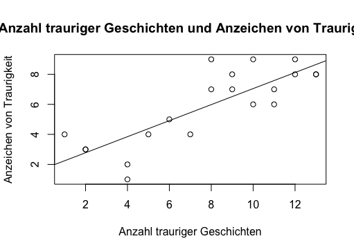

Chapter 8 Datenvisualisierungen
Es gibt viele verschiedene Möglichkeiten Grafiken in R zu erstellen. Hier sind einige Befehle, die ohne das Laden zusätzlicher Pakete auskommen:
plot(x,y)
barplot(x,y)
boxplot(x)
matplot(x) # Matplot() wird nächste Woche besprochenAndere Grafikformate benötigen den Import zusätzlicher Pakete. Dafür bieten diese sehr viele Möglichkeiten einer ansprechenden Gestaltung:
# Für den ggplot() Befehl:
install.packages("ggplot2")
library(ggplot2)Heute werden wir mit dem Datensatz traurig.txt weiterarbeiten.
#setwd("...")
list = read.table("traurig.txt", header = T)Verschiedene Formen der Datenvisualisierung sind abhängig vom Forschungsinteresse und der jeweilig gestellten Forschungsfrage. Im folgenden wird ein Beispiel beschrieben wie Ergebnisse einer Datenerhebung dargestellt werden könnten:
(dieses Beispiel ist komplett ausgedacht)
Forschungsfrage
Können traurige Geschichte, die Kinder im Fernsehen sehen, ihre Gemütslage beeinflussen?
- Wie könnte man eine solche Forschungsfrage untersuchen?
- Welche Methode könnte man anwenden?
- Welche Beobachtungen könnten zur Beantwortung der Forschungsfrage beitragen?
Vergleich: Anzahl trauriger Geschichten im Fersehen \(\leftrightarrow\) beobachtbare Anzeichen von Traurigkeit.
(Datensatz traurig.txt)
| Kind | Anzahl trauriger Geschichten | Anzeichen schlechter Laune |
|---|---|---|
| Leon | 10 | 6 |
| Ben | 5 | 4 |
| Julie | 8 | 9 |
| Mathilda | 4 | 2 |
| Louis | 9 | 8 |
| \(\cdots\) | \(\cdots\) | \(\cdots\) |
8.1 Scatterplot
Beispiel der Datendarstellung in einer Grafik: plot(x,y)
list = read.table("traurig.txt", header = T)
plot(list[,2],list[,3],
main = "Anzahl trauriger Geschichten und Anzeichen von Traurigkeit",
xlab = "Anzahl trauriger Geschichten", ylab = "Anzeichen von Traurigkeit")
Beispiel Datendarstellung mit Regressionslinie
list = read.table("traurig.txt", header = T)
plot(list[,2],list[,3],
main = "Anzahl trauriger Geschichten und Anzeichen von Traurigkeit",
xlab = "Anzahl trauriger Geschichten", ylab = "Anzeichen von Traurigkeit")
abline(lm(list[,3] ~ list[,2]))
Ein anderer Aspekt der Datenbetrachtung
Vergleich der Anzeichen von schlechter Laune zwischen Jungen und Mädchen unabhängig von der Anzahl der Geschichten"
list = read.table("traurig.txt", header = T)
head(list)## Kind Geschichte traurig gender groesse test
## 1 Leon 10 6 m 1 1
## 2 Ben 5 4 m 2 2
## 3 Julie 8 9 f 3 3
## 4 Mathilda 4 2 f 4 4
## 5 Louis 9 8 m 5 5
## 6 Bambi 11 6 m 6 58.2 Barplot
Weiteres Grafikbeispiel: barplot(x)
Wie kann man aus unseren Daten den Mittelwert der traurigen Anzeichen für Mädchen und Jungen getrennt bauen?
list = read.table("traurig.txt", header = T)
barplot(c(mean(list[list$gender == "m",3]), mean(list[list$gender == "f",3])), names.arg = c("m","f"))Vergleich von Grafiktypen
| Scatterplot | Barplot |
|---|---|
|  |

|
- Worin unterscheiden sich beide Grafiktypen und die damit zusammenhängenden Experimente?
- Was sind abhängige und unabhängige Variablen des jeweiligen Experimentes?
In einem Psycholinguistischen Experiment erfolgt die Darstellung unabhängiger Variablen auf der x-Achse (Manipulation) und die Darstellung der abhängigen Variablen auf der y-Achse (Beobachtung),
8.3 Boxplot
Grafik: Vergleich Trauer zwischen beiden Gruppen mit einem boxplot()
list = read.table("traurig.txt", header = T)
lmts = range(list[,3])
par(mfrow = c(1,2))
boxplot(list[list$gender=="m",3],ylim=lmts, main = "Jungs")
boxplot(list[list$gender=="f",3],ylim=lmts, main = "Maedchen")8.4 Die ggplot()-Funktion
Dies ist eine vielseitige Funktion zur Darstellung von Grafiken. Die Syntax ist manchmal wenig intuitiv. Das Verständnis der Syntax lohnt sich aber. Man kann viele unterschiedliche Informationen grafisch ansprechend mit ggplot() darstellen.
Man muss allerdings das Paket ggplot2 installieren und anschliessend laden:
# Für den ggplot() Befehl:
install.packages("ggplot2")
library(ggplot2)Dieser Befehl spezifiziert welcher Datensatz zum Plotten benutzt werden soll. Ein leeres Fenster wird ausgegeben, weil man noch keine Informationen übergeben hat, was konkret grafisch dargestellt werden soll.
library(ggplot2)
ggplot(data = list)library(ggplot2)
ggplot(data = list) + geom_point(mapping = aes(x = Geschichte, y = traurig))Scatterplot
Man kann relativ einfach die beiden Gruppen der Kinder (gender) farblich verschieden darstellen, um einen groben Überblick über die Verteilung zwischen verschiedenen Gruppen zu bekommen:
library(ggplot2)
library(Hmisc)
ggplot(data = list) + geom_point(mapping = aes(x = Geschichte, y = traurig, colour = gender))
Man kann eine gerade Linie ziehen, die den kleinsten Abstand zu den einzelnen Werten darstellt. Hier muss zusätzlich zum geom_point() Befehl noch der geom_smooth() Befehl mit seinen Attributen zur Grafik zugefügt werden. Der Zusatz method = “lm” steht dabei für linear model.
ggplot(data = list) + geom_point(mapping = aes(x = Geschichte, y = traurig, colour = gender)) + geom_smooth(mapping = aes(x = Geschichte, y = traurig), method = "lm")
Es ist mit ggplot() allerdings auch möglich eine nicht-lineare Linie darzustellen, die einen besseren Fit der Daten darstellt. Der Befehl ähnelt dem vorherigen ohne method = “lm”. Ohne lineares Modell (method = lm) wird eine nicht lineare Linie dargestellt.
library(ggplot2)
library(Hmisc)
ggplot(data = list) + geom_point(mapping = aes(x = Geschichte, y = traurig, colour = gender)) + geom_smooth(mapping = aes(x = Geschichte, y = traurig))
Man kann die verschiedenen linearen Linien auch nach Gruppe getrennt darstellen. 1. Datensatz laden 2. Scatterplot erstellen geom_point() - mit der verschiedenen Darstellung der Gruppen colour = gender 3. Linie in die Grafik zeichnen method = “lm” und colour = gender
library(ggplot2)
library(Hmisc)
ggplot(data = list) + geom_point(mapping = aes(x = Geschichte, y = traurig, colour = gender)) + geom_smooth(mapping = aes(x = Geschichte, y = traurig, colour = gender), method = "lm")8.5 Hausaufgabe
Lese die Daten: vp.dat ein.
Dies ist ein Datensatz eines self-paced reading Experiments. In einem solchen Experiment, sollen Versuchspersonen einen Satz Wort für Wort oder Phrase für Phrase in ihrem eigenen Tempo lesen. Wenn die VP mit einem Wort/Phrase fertig ist, drückt sie auf eine Taste, das Wort verschwindet und das nächste Wort taucht auf. Die Klickzeiten werden als Lesezeiten für jedes Wort/Phrase interpretiert.
Der Datensatz enthält die folgenden Informationen:
- vp = Nr der Versuchsperson
- exp = Experimentcode
- item = Nr des Satztyps
- cond = Bedingung in der der Satz präsentiert wird
- post = Nr. der Position im Satz / Area of Interest
- phrase = Wort/Phrase, die präsentiert wurde
- ans = gegebene Antwort auf Verständnisfrage nach der Präsentation des Satzes
- time = Lesezeit in ms
Lasst Euch die Mittelwerte zwischen den Beiden Bedingungen auf der Interest Area 6 anzeigen und schreibt Euren Lösungsweg in ein Skript.